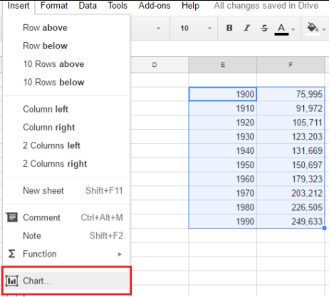
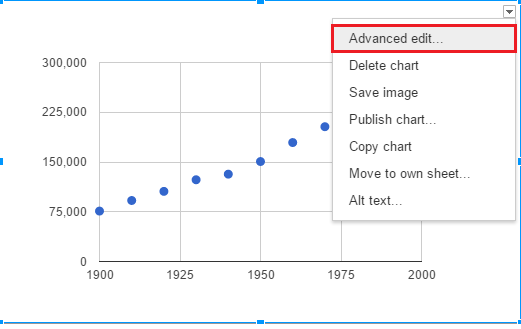

Ein Trendlinie in einem Programm wie Google Sheets dient zum bestimmen des Zukünftigen verlaufes eines Datensets. Hierzu muss zunächst ein Datenset eingefügt werden.

Martkiert man nun dieses Datenset und wählt die "Insert" Option, kann man einen Graphen einfügen.
Nun wählt man die Art von Graph die man möchte. Wir haben uns hier für ein Scatter Chart entschieden

Klickt man nun auf Advanced Edit
Kann man im folgenden Menü die Trendlinien hinzufügen

Eine Gerade entlang des Datenverlaufes. Am besten geeignet für lineare Datensets, welche stetig steigen oder fallen.

Exponentialfunktion zum Beschreiben des Verlaufes, besonders Hilfreich zur Beschreibung von exponentiell steigende oder fallende Datensets wie z.B. Bevölkerungswachstum.

Die Polynomiale Trendlinie ist euqivalent zum Ausgleichspolynom. Hilfreich zur Beschreibung von Datensets die steigen und fallen.

Hier noch die Polynomiale Trednlinie zu den Werten aus dem Beispiel zum Ausgleichspolynom